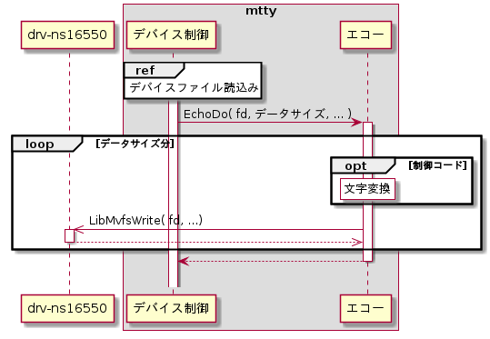
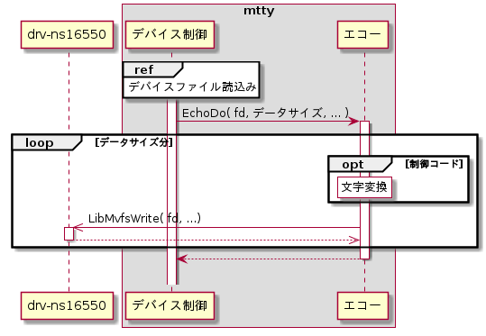

エコー
デバイスファイルからデータ読込み時にデバイス制御から起動され、制御コードの文字変換とデバイスファイル書込みを行う。シーケンスを以下に示す。
シーケンス


制御文字変換
データが0x00～0x1Fの場合は変換テーブルに従って文字変換を行う。詳細は、外部仕様(エコー機能)の制御コード文字変換を参照のこと。
書込み
デバイスファイルへの書込みはデバイス制御モジュールのデバイスファイルwrite機能を用いる。